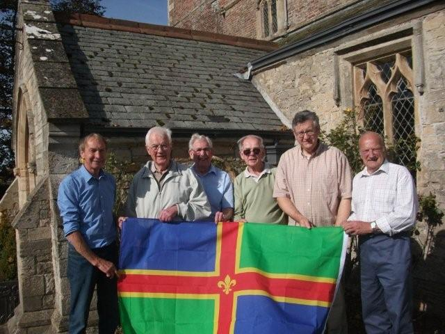
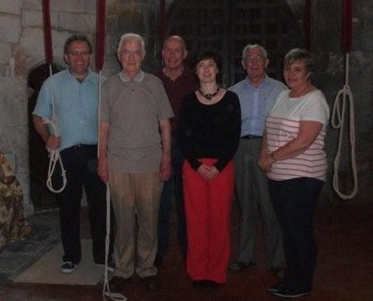
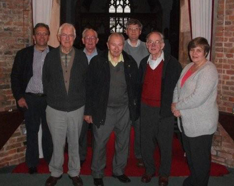

2014 Quarter Peals

28th December 2014
All Saints Church Friskney Lincs (9-0-0)
1440 St. Clements & Plain Bob Minor
- C Victor Waite
- Isabel Barker
- G John Collett
- Michael J Belcher (C)
- Michael J Smith
- Tony W Barker
In thanksgiving for the life of Nora Wall, loyal supporter of ringing here and at Burgh le Marsh, Ingoldmells and Addlethorpe.
Wednesday 3rd December 2014
St Andrew, Sempringham (7-0-23)
1320 Cambridge Surprise Minor in 41 mins
- Brian Plummer
- Valerie S Wild
- G John Collett
- David Collin
- Philip R Wild
- Ian DGB Ansell (C)
In loving memory of Nora Miller, Aunt to 2. and 5. RIP
Saturday 29th November 2014
SS Mary & Nicholas, Wrangle (9-3-23)
1260 Plain Bob Doubles in 42 mins
- J William Daubney
- Joanne French
- David Bennett
- G John Collett (C)
- Thomas J. Freeston
- Michael Bainbridge
Rung for the 300th anniversary of the installation of the original six bells by Henry Penn
Sunday 19th October 2014
St Botolph, Boston (21-1-10)
1264 Plain Bob Major in 46 mins
- Caitlin Meyer
- Elaine Wilkinson
- Sam Napper
- Val Wild
- Michael J Belcher
- Alan D H Bird
- Nick Elks
- Michael J Smith (C)
Rung for LDG Eastern Branch quarter peal week
St Michael & All Angels, Coningsby (10-1-3)
1260 Plain Bob Doubles in 46 mins
- Bob Hardwick
- Isabel Barker
- Tony Barker
- David Collin
- Mark A Hibbard (C)
- Anita R Collin
Rung for LDG Eastern Branch quarter peal week and in memory of Derek W Pont (1st Dec 1936 - 27th Sep 2014), probably the best beekeeper in the world
Saturday 18th October 2014
St Mary, Frampton (12-2-26)
1260 Doubles (Grandsire, St Simon's, St Martin's and Plain Bob) in 47 mins
- Penny Fountain
- David Collin
- Valerie S Wild
- Wayne Francis
- Ian DGB Ansell (C)
- Dick Thompson
Rung for LDG Eastern Branch quarter peal week
Friday 17th October 2014
St Helena, Leverton (8-2-24)
1260 Plain Bob Minor in 43 mins
- Caroline E Beach
- Joanne French
- Michael J Smith (C)
- Simon Pearson
- David Collin
- J William Daubney
First Quarter Peal of Minor: 1
Rung for LDG Eastern Branch quarter peal week
Thursday 16th October 2014
St Guthlac, Fishtoft (12-2-9)
1272 Cambridge Surprise Minor in 41 mins
- Thomas J Freeston
- Yvonne I Smith
- Michael J Belcher
- Alan D H Bird
- David Collin
- Michael J Smith (C)
First Surprise Minor inside: 2
Rung for LDG Eastern Branch quarter peal week
St Michael & All Angels, Coningsby (10-1-3)
1320 Plain Bob Doubles in 47 mins
- Caroline Beach
- Tess Rowland
- Joanne French
- Ian DGB Ansell (C)
- Mark A Hibbard
- Bob Hardwick
First Quarter Peal 'inside': 2
Rung for LDG Eastern Branch quarter peal week
Tuesday 14th October 2014
St Andrew's, Butterwick (9-3-12)
1260 Plain Bob Doubles in 44 mins
- Louis Watson
- Aubrey Pepper
- David Bennett
- Thomas J Freeston
- Michael J Smith (C)
- Joanne French
First Quarter Peal away from Cover: 1
Rung for LDG Eastern Branch quarter peal week
Wednesday 1st October 2014
St Andrew's, Butterwick (9-3-12)
1260 Plain Bob Minor in 45 mins
- Aubrey Pepper
- Brian Bunting
- G John Collett
- Thomas J Freeston
- David Collin
- Ian DGB Ansell (C)
Rung to commemorate Lincolnshire Day

The Band (L to R): David Collin, John Collett, Tom Freeston, Aubrey Pepper, Ian Ansell, Brian Bunting
Saturday 13th September 2014
All Saints', Benington (11cwt)
1260 Grandsire Doubles in 43 mins
- Isabel Barker
- Joanne French
- Thomas J Freeston
- G John Collett (C)
- Tony Barker
- Simon Pearson
Rung for Heritage Weekend [Read more ...]
First Quarter Peal in the Method: 2

The Band (L to R): Simon Pearson, John Collett, Tony Barker, Isabel Barker, Tom Freeston, Jo French
Sunday 29th June 2014
St James's, Freiston (14-1-4)
900 Plain Bob Minor (180 & 720) in 31 mins
- Caroline Beach
- Christine Higginson
- Joanne French
- Sam Napper
- Simon Pearson
- Michael J Smith (C)
For Freiston's 900 year celebrations
Dedicated to all those married in the Church
First in the Method: 1
Saturday 10th May 2014
St James's, Freiston (14-1-4)
1260 Single Court Bob Minor in 42 mins
- Adrian Clifton (C)
- Angela Clifton
- G John Collett
- Joanne French
- Simon Pearson
- Michael J Smith
For Freiston's 900 year celebrations
In memory of a quarter peal of Single Court rang on 2nd June 1953 for the Coronation by Bert Harrison, Albert Pearson, Horace Pearson, William Bradley, Harold Harper and George Dawson
First in the method: 4 and 5
Friday 25th April 2014
St Andrew's, Butterwick (9-3-12)
1260 Plain Bob Minor in 40 mins
- Joanne French
- Aubrey Pepper
- G John Collett
- Thomas J Freeston
- Simon Pearson
- Ian DGB Ansell (C)
90th Birthday compliment to Tom Palmer
also for Louise Pearson who celebrates her Birthday to-day

Tom with the Band (L to R): Simon Pearson, John Collett, Tom Freeston, TOM PALMER, Ian Ansell, Aubrey Pepper and Jo French
Thursday 24th April 2014
St Guthlac's, Fishtoft 12-2-9)
1260 Plain Bob Minor in 45 mins
- J William Daubney
- Aubrey Pepper
- G John Collett
- Thomas J Freeston
- David Bennett
- Ian DGB Ansell (C)
90th Birthday compliment to Tom Palmer (for 25th April)
Monday 21st April 2014
St Laurence's, Surfleet (12-0-9)
1280 Cambridge Surprise Major in 42 mins
- Joseph E T Waters
- David Collin
- Valerie S Wild
- Caitlin A Meyer
- G John Collett
- Philip R Wild
- Daniel T Meyer
- Benjamin J Meyer (C)
First at Major: 1
Rung as a birthday compliment to HM Elizabeth II, Daniel Meyer, Jennifer Vear, Marie Watts and 21st birthday compliment to James Collett who all celebrate their birthday today.
Sunday 20th April 2014
St Michael & All Angels, Coningsby (10-1-3)
1260 Plain Bob Doubles in 50 mins
- Bob Hardwick
- Joan E Simpson
- Ed Purkiss
- Alan Bird
- Mark A Hibbard (C)
- Matthew Cohu
For Easter Sunday
First Quarter Peal: 6
First Quarter Peal away from Cover: 1
Sunday 6th April 2014
St Wilfrid's, Alford (12-1-24)
1350 Grandsire Doubles in 45 mins
- Philip Ford
- Caitlin A Meyer
- Daniel T Meyer
- Richard D Willoughby
- Benjamin J Meyer (C)
- Edward Vear
Specially arranged for the Golden Wedding Anniversary on 31st March 2014 of Jan, a local ringer at Alford, and Bob Clark
First Quarter Peal: 1
Tuesday 25th March 2014
SS Peter & Paul, Wigtoft (7-3-21)
1260 Plain Bob Minor in 42 mins
- Penny Fountain
- Thomas J Freeston
- Brian Bunting
- David Collin
- Wayne N Francis
- Ian DGB Ansell (C)
In memory of Derek Halliday who was Church Warden at SS Peter & Paul, Wigtoft, for many years.
Wednesday 29th January 2014
St Andrew's, Horbling (9-1-17)
1320 Cambridge Surprise Minor in 42 mins
- Penny Fountain
- Philip Wild
- Valerie S Wild
- David Collin
- Mark A Hibbard
- Ian DGB Ansell (C)
In loving memory of Roy Withyman, Tower Captain of Pinchbeck, RIP.
Wednesday 1st January 2014
St Mary's, Harrington (2-3-17)
1260 Plain Bob Singles in 34 mins
- Ian B Evans
- Gemma L Evans (C)
- Thomas J Evans
Rung to celebrate the New Year